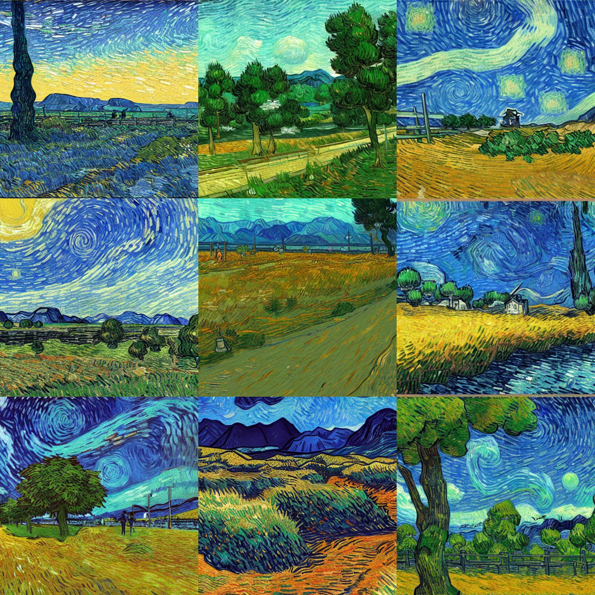
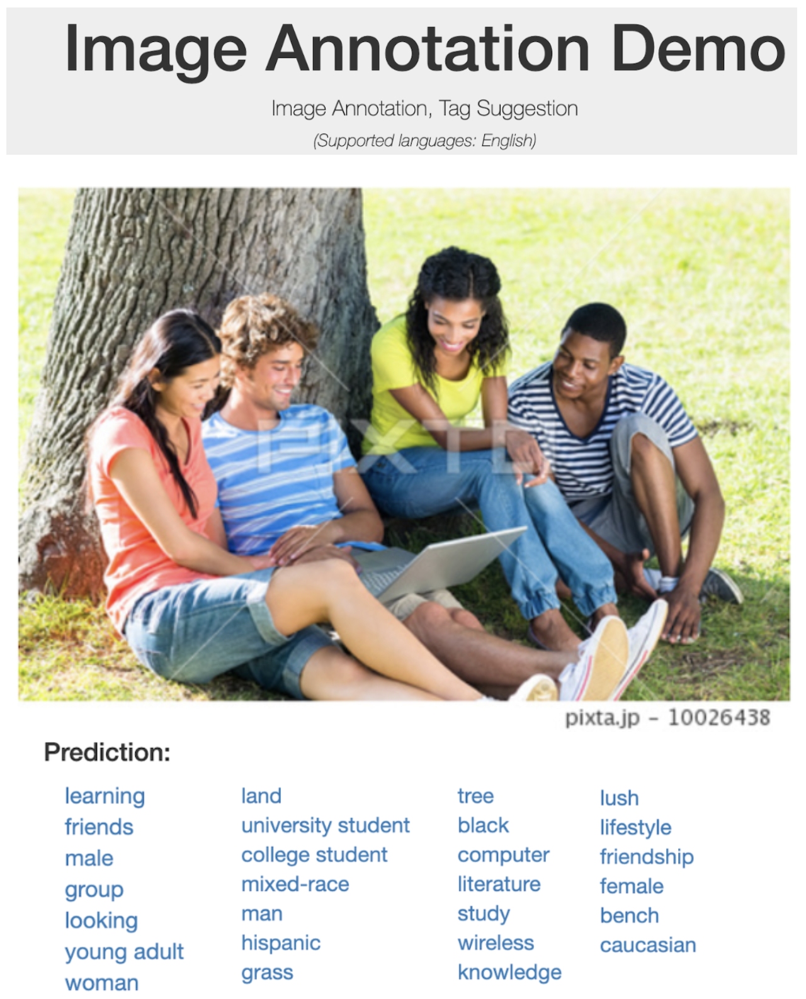
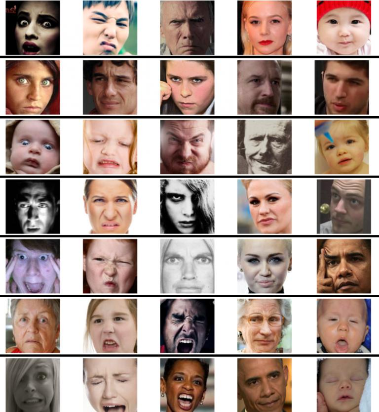
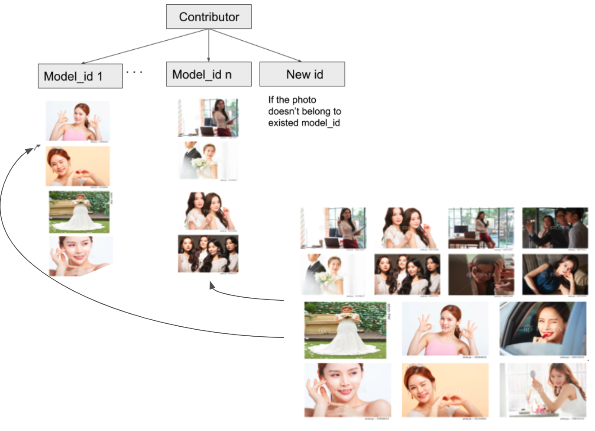

Projects
-
LLM models are huge in terms of memory sizes (a few GBs to hundreds of GBs). Yet, edge devices do not have hundreds of GBs of memory available. Along with this, they mostly have shared memory systems (shared DRAM) that CPUs, GPUs and other accelerators, and all such computing units use shared memory to access/update the data. The use of LLMs can be quite common in many cases. However, if multiple application uses shared memory at the same time, they will slow down each other. We demonstrated this behavior for deep neural networks (DNNs) in our earlier study by using GPU and DLA (deep learning accelerator) on NVIDIA Jetson Edge devices. So, to eliminate such memory limitations and unexpected slowdowns of execution, we can develop efficient memory management mechanisms for LLMs on edge devices. -
Takenote is a product that supports meeting secretaries to enhance their working speed. This product includes several modules, which inherit the power of Large Language Models (LLMs) and state-of-the-art research in audio processing. TakeNote is equipped to transcribe meetings to text, identify speakers in dialogue, summarize the contents, do content semantic searching.
-

This project aims to support art reviewers in fastening their reviewing process. This in-house developed framework will review more than 20 high standards of any Image Stock platform. This project cover up to 30k images per day and save up the operation cost to 50%, in several case, it can replace human in making decision.
Achievments : An AI solution that support reviewers in evaluating photographs
Challenges : More than 20 standards including tiny objects in photos, enormous number of domains, etc
Organization :Pixta Vietnam
-
This product of ClientScan This product of ClientScan, where I work as an AI advisor and a system engineer. This product is a full-package Face Recognition (FR) solution, including cloud base registration, an extensive database, and an edge-on-face recognition solution. We collaborated with advisors from Oxford University to develop a light-fast FR model that works with a massive number of identifiers (>10k) with an accuracy of> 99.4% while handling up to 30 FPS.
-
This project of PIXTA start from Nov, 2022, inherites the current advances of Stable Diffusion (SD) to create Image Stock level photos for commercial. We want to add more content into the SD model by finetuning it. Plus, we want to direct SD to responsible AI.
Achievments : All in apps including txt2img, img2img, inpaint, outpaint, upscale, imgvariation
Challenges : Host several models in one app and reduce huge computation
Organization :PIXTA Vietnam
-

Learning-to-Rank re-rankes the results of PIXTA Inc's search system to boost revenue of the company, while provide the most matching resuts to end-users. We build a machine learning model from billions user's data. The project employed MLOPs manner to automatically get data, train, and evaluate.
Achievments : Define a feature set based on business, applied active learning model, increase up to 6% revenue per month (30000USD)
Challenges : Complicated price structure, huge data, very unbias behavior
Organization :PIXTA Vietnam
-
 -

The model based on the big backbone of Face Recognition and trained in multi-task learning manner to make model recognize age and emotion of models. We also apply context-aware recognition to extract both facial and contextual features to enhance accuracy of the model
Achievments : With the new solution, our model can improve the quality in age and emotion labels
Challenges : No big public dataset is available while our data is noisy
Organization :PIXTA Vietnam
-

We have big facial dataset without any annotation. In order to fasten the identity assignment process, we use face recognition to automatically assign ids. We clustered hundred thousands unlabelled faces in the database.
Achievments : Hundred thousands unlabelled faces are assigned identities
Challenges : Two many classes to handle, each face has different emotion, attributes, non-human faces, etc.
Organization :PIXTA Vietnam
-

In 2018, I joint Pi School at Rome, Italy to develop a POC Customer Care Chatbot, the first voice bot in the energy field in Italy. My sponsor is Sorgenia, an innovative, young, and green energy company.
Achievments : The first voice bot in the energy field in Italy
Challenges : A real voice chatbot requires many data to develop
Organization :Pi School
-

In 2017, I start working in a project at Panasonic R&D Center Vietnam to build the core conversational system. The project aim to build the core NLP solution for appliances, autonomous, smart devices, HR, etc system at Panasonic. The core include speaker identification, speech recognition, multi-domain conversational system, wake-up word recognition. We also applied this solution to a healhcare center for old and lonely people in Kyoto, Japan.
Achievments : A full converstaional system
Challenges : Data limitation in Japanese. Too many features in one conversational system.
Organization :Panasonic R&D Center Vietnam